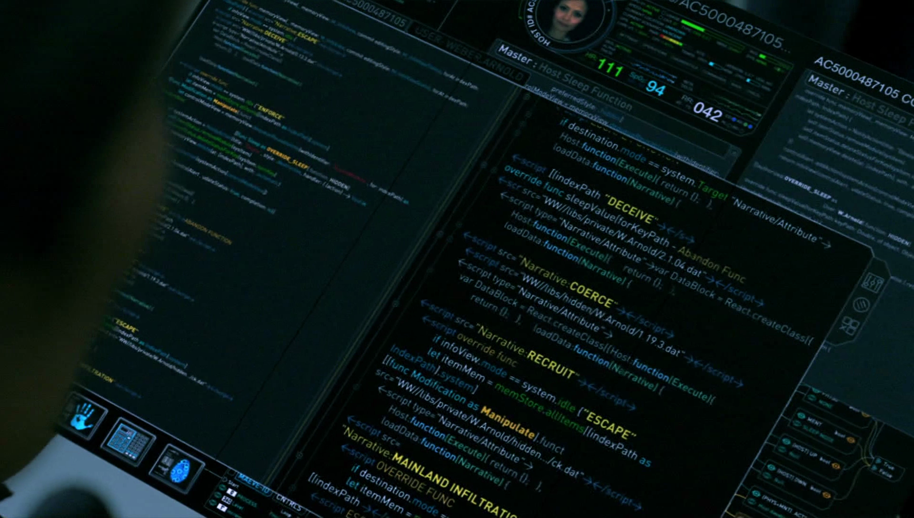

Westworld Sublime Theme
Making a custom Sublime Text 3 Theme
I often find myself moving between pre-built Sublime themes every few months, never fully satisfied with the colors or aesthetic. I thought it would be nice to write a quick blog to document making a custom one if anyone is interested in doing the same.
As much as Lisp and Vim are familiar to me, I like the bare bones of working in a simple text editor. Maybe I'll change in the future, but I've been programming professionally since 2014 and it's held up all this time.
As of yesterday (10/6/2022) I heard that Westworld had been cancelled off its home on HBO. I found the first season of westworld a breath of fresh air, mostly because that's when I was building a 3D printer for tissue engineering while doing research at the University of Vermont. It hit quite close to home. So I thought I would take some time and build the closest approximation to the IDE shown briefly in the show.
UI Theme and Color Scheme
There are two sections of Sublime necessary to change, the workspace/code portion and the UI which includes the sidebar, tabs, widgets, etc. The current color scheme is in .sublime-color-scheme (JSON) while legacy support for .tmTheme (XML) files persists. The UI themes are JSON .sublime-theme files.
Creating .sublime-color-scheme file
Starting with the popular color schema Guna I downloaded the .sublime-color-scheme file and started editing the JSON directly. To start I developed my inital color palette from the clearest scene readily available:

It's important to note that this is React, which gives a good starting point for editing the base theme to match the base color scheme. I'll be testing Python and Go (my daily drivers) later in this blog and adding appropriate scopes to the theme. There is an editor online for .thTheme files. However I didn't find it as extensible as modifying the downloaded color scheme JSON itself and monitoring the result in a test react file. Editing the JSON and saving the file yields immediate change and updates locally.
The simplest way to generate some hex values from the image itself was to send it to an online free jpeg to hex image color picker. I knew this wouldn't be a perfect solution, but it gave me somewhere to start. Breaking down the visual components roughly:
| Identifier | Hex | capitalized script path | #8A9866 |
|---|---|
| lowercase script path | #4D5A41 |
| base text | #4B6270 |
| sub function calls | #337F9D |
| function calls | #475F66 |
| dark green - minimal | #224C26 |
| light green - minimal | #316159 |
| bright blue - number | #33BCEB |
| red off in the corner | #C70039 |